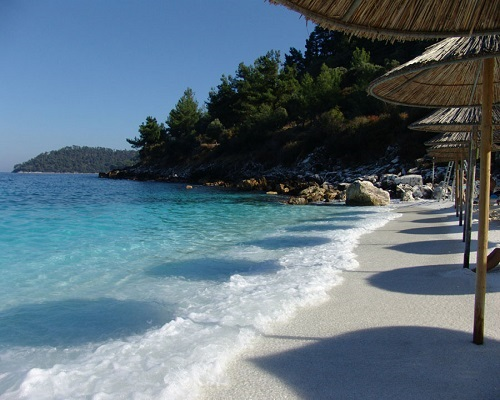
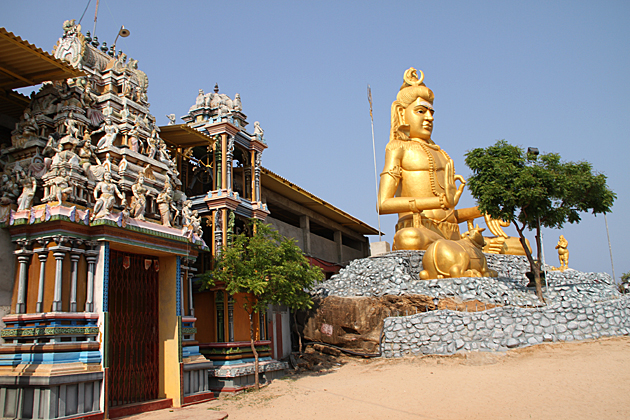

Trinkomalee
Marble Beach
Marble beach is one of the most beautiful beaches in the Trincomalee area. The water is crystal blue and there are hardly any waves making it an excellent bathing spot. Before the war the beach was mainly used by Air Force officers and even now it is under the control of Air Force. You need to get approval to get to the beach, which can be obtained by the nearby China Bay Air Force camp. You need to pay an entrance fee of 20 rupees per person to enter the beach area. There are some huts available in the beach which were booked when we went there, but it is likely that you have to have a contact in Air Force to book them. The name Marble beach comes from the Marble stones found in the area. There are lifeguards in the area so you can enjoy a bath without the fear of drowning, and you can go a fair distance towards the sea because of shallow waters. Another thing I noticed was the water did not have the salt taste. There is a restaurant near the beach maintained by the Air Force, Although the food was great the price tag was a bit on the high side. For various other attractions nearby you can check out attractions near Trincomalee

Harbour
Trincomalee Harbour is a seaport in Trincomalee Bay or Koddiyar Bay, a large natural harbour situated on the northeastern coast of Sri Lanka. Located by Trincomalee, Sri Lanka, in the heart of the Indian Ocean, its strategic importance has shaped its history. There have been many sea battles to control the harbour. The Portuguese, Dutch, French, and the English have each held it in turn. In 1942 the Imperial Japanese Navy attacked Trincomalee harbour and sunk three British warship anchored there.Koneswaram-Kovil
Koneswaram Temple (Tamil: திருக்கோணேச்சரம் Tirukkōṇēccaram, also known as Dakshinakailasha (Tamil: தென்கயிலை, Těņkayilai, litt. Southern Kailasa) is a classical-medieval Hindu temple dedicated to Lord Shiva in Trincomalee, Eastern Sri Lanka. The temple is situated atop Konesar Malai, a promontory that overlooks the Indian Ocean, the nearby eastern coast (the Trincomalee District), as well as Trincomalee Harbour or Gokarna Bay. Konesvaram is revered as one the Pancha Ishwarams, of Sri Lanka for long time. Being a major place for Hindu pilgrimage, it was labelled "Rome of the Gentiles/Pagans of the Orient" in some records. Konesvaram holds a significant role in the religious and cultural history of Sri Lanka, as it was likely built during the reign of the early Cholas and the Five Dravidians of the Early Pandyan Kingdom. Pallava, Chola, Pandyan and Jaffna designs here reflect a continuous Tamil Saivite influence in the Vannimai region beginning during the classical period. The river Mahavali is believed to be risen at Sivanolipatha Malai, {{lang|tm|Mount of Shiva's glowing feet, and meets the sea near Konesvaram Rock. This formation is the basis of the myth that it is comparable to Ganges, in that it symbolically crowns the flowing of river from Shiva's head to his feet. Developed from 205 B.C., the original kovil combined key features to form its basic Dravidian temple plan, such as its thousand pillared hall – "Aayiram Kaal Mandapam" – and the Jagati expanded by King Ellalan Manu Needhi Cholan. Regarded as the greatest building of its age for its architecture, elaborate sculptural bas-relief ornamentation adorne a black granite megalith. In the medieval period, its multiple gold plated gopuram towers were expanded. The Koneswaram Temple is one of three major Hindu shrines on the promontory with a colossal gopuram tower, but it stands distinctly on the cape's highest eminence. The Pavanasam Theertham at the preserved Papanasuchunai holy well and the proximal Back Bay Sea (Theertham Karatkarai) surrounding Konesar Malai. The complex was destroyed by the Portuguese Empire in colonial religious attacks between 1622 and 1624, and Fort Fredrick was built at the site from its debris. In 1632 Ati Konanayakar Temple was built, and housed some of its original idols, but was located away from the city houses.